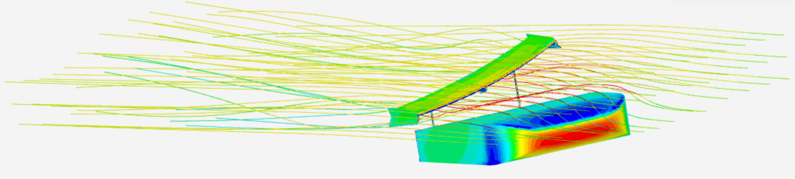
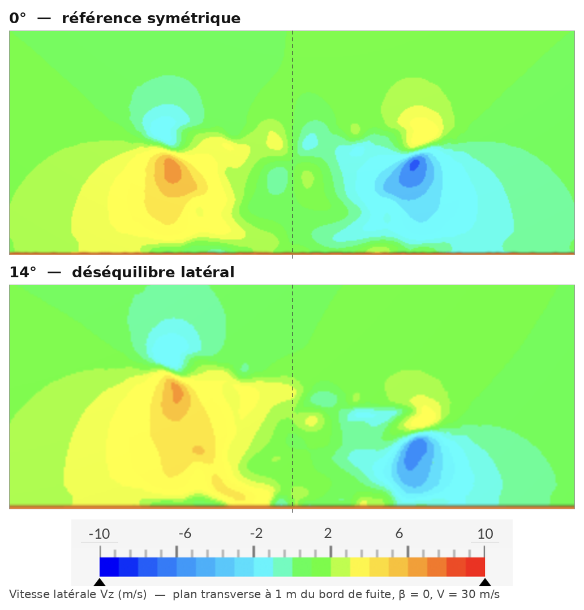
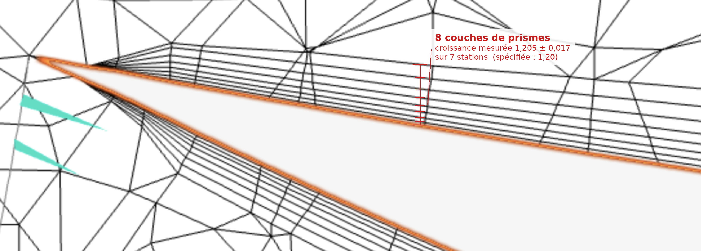
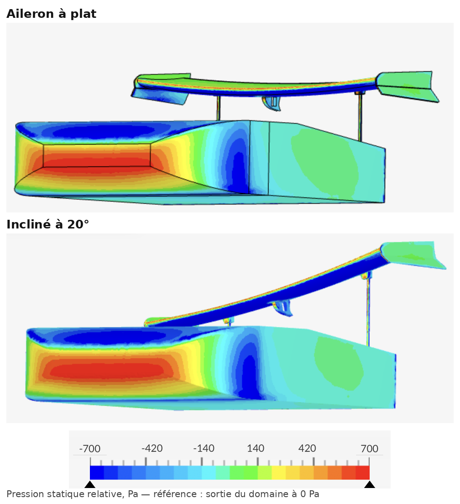

Aileron centripète
Incliner latéralement l’aileron arrière ne détruit pas sa force : il la réoriente. Une part de l’appui devient un effort dirigé vers le centre du virage, directement utilisable, sans que le module de la force en pâtisse et pour un surcoût de traînée que le cercle d’adhérence absorbe très largement. L’optimum n’est pas à la butée mécanique de 23°, ni aux 20° choisis au départ, mais à 14° — encadré par des points mesurés de part et d’autre, aux deux angles de dérapage calculés.

Réorienter la force plutôt que d’en créer une nouvelle
Un aileron produit une force perpendiculaire à son plan. L’incliner latéralement ne l’annule pas : elle bascule. Une part reste de l’appui, une part devient un effort centripète qui pousse la voiture vers l’intérieur du virage.
L’échange est favorable parce que les deux composantes ne se valent pas. L’appui abandonné n’aurait rendu que μ fois sa valeur en adhérence, une fois passé par le pneu. La force latérale aérodynamique, elle, agit directement sur la caisse sans rien demander au contact au sol.
La condition de rentabilité s’écrit alors μ < cot(θ/2). Pour l’angle mesuré de 21,27°, cela donne 5,33 — un seuil que tout pneu réel satisfait très largement. Le concept est donc gagnant par construction, à une seule condition : que l’inclinaison ne dégrade pas la force elle-même. C’est précisément ce que cette étude mesure.
Ce que fait réellement l’aileron incliné
Dans un plan transverse placé un mètre derrière le bord de fuite, l’aileron à plat laisse deux tourbillons contrarotatifs qui se compensent à 0,05 m/s près de part et d’autre de l’axe. Incliné, il en gonfle un et étouffe l’autre : le sillage emporte alors un flux latéral net, et c’est la réaction de ce flux qui pousse la caisse vers l’intérieur du virage.

Ce qu’on mesure, et ce que vaut la mesure
Vingt calculs de production au niveau 8 M cellules, plus un calcul sans aileron et deux niveaux supplémentaires pour l’étude de convergence. Les réglages de raffinement sont tenus identiques d’une géométrie à l’autre, pas le nombre final de cellules.
| solveur | RANS incompressible, schéma SIMPLE (SimScale) |
|---|---|
| turbulence | k-ω SST |
| vitesse | 30,000 m/s — module conservé à tous les dérapages |
| air | ρ = 1,196 kg/m³ · ν = 1,529·10⁻⁵ m²/s |
| géométrie | 1,723 × 1,556 × 0,414 m |
| Reynolds | 3,4·10⁶ sur la longueur du modèle |
| surface de référence | 0,644 m² — qS = 346,60 N |
| couche limite | 8 couches · croissance 1,2 · épaisseur relative 0,4 |
| fenêtre de moyennage | 1000 dernières itérations sur 2000 à 2500 |
Les coefficients sont adimensionnés à la masse volumique du solveur, 1,196 kg/m³, et non à la valeur ISA de 1,225 : c’est l’air de la fiche matériau qui a produit les forces, donc c’est lui qui doit apparaître au dénominateur. L’écart est de 2,4 % sur chaque coefficient. Il ne déplace aucune conclusion — les gains, qui sont des rapports entre deux configurations, ne bougent que de deux dixièmes de point — mais une chaîne d’adimensionnement incohérente est la première chose qu’on vérifie en relisant le travail d’un autre.
Le maillage de paroi

Avec la maille surfacique de 26,8 mm relevée dans les réglages, la première couche vaut 0,650 mm — c’est la valeur spécifiée, la mesure au pixel la donne 16 % plus basse et n’est pas assez résolue pour trancher. La force visqueuse extraite des calculs — 24,44 N, soit 10,6 % de la traînée totale — donne une vitesse de frottement de 2,0 à 2,5 m/s selon l’hypothèse de surface mouillée, et donc y⁺ ≈ 42 à 54 au centre de la première maille, convention des solveurs. C’est la zone logarithmique, celle où les lois de paroi du k-ω SST sont faites pour travailler : ni paroi résolue, ni couche tampon.
Deux réserves. Le frottement est moyenné sur tout le corps alors que la maille est celle de l’aileron : la valeur est un hybride, et le y⁺ local sur l’aileron, où l’écoulement est accéléré et attaché, est plus élevé. Et l’incertitude sur la surface mouillée, ±12 %, s’ajoute à celle sur y₁. La conclusion « zone logarithmique » résiste à ces deux marges ; le chiffre exact, non.
Convergence en maillage
| Maillage | C_z | Écart | C_L | Écart |
|---|---|---|---|---|
| 4 M | −0,5889 | — | −0,9272 | — |
| 8 M | −0,5537 | 6,0 % | −0,8725 | 5,9 % |
| 11 M | −0,5433 | 1,9 % | −0,9042 | 3,6 % |
Trois niveaux à 10° de dérapage et 20° d’inclinaison, réglages de raffinement identiques. C_z converge de façon monotone et l’écart 8 M → 11 M tombe à 1,9 % : le 8 M est dans la plage asymptotique. C_L n’est pas monotone, et les conclusions portant sur l’appui se lisent donc avec une marge de 4 %. Les niveaux ne sont pas dans un rapport de raffinement constant : l’incertitude retenue est l’écart 8 M → 11 M majoré, pas un GCI formel.
Répétabilité et contrôles de symétrie
Deux calculs 4 M strictement identiques s’accordent à 0,33 % sur C_L, 1,61 % sur C_z et 0,63 % sur C_x. Les runs portent une oscillation lente de période 300 à 400 itérations : une moyenne sur 100 itérations en attrape une phase quelconque et varie de près de 1 %. D’où la fenêtre de 1000 itérations, identique pour tous les calculs, avec un critère d’acceptation de moins de 2 % de dérive entre les 400 dernières et les 400 précédentes.
Enfin, à dérapage nul et aileron à plat, géométrie et écoulement sont symétriques : les trois grandeurs qui doivent s’annuler le font — C_z = −0,0054, C_n = −0,0013, C_roulis = −0,0008. Ce contrôle valide le centre de rotation des moments, les conventions de signe et la symétrie d’ensemble. Il ne prouve pas l’absence d’asymétrie : le quasi-zéro est une somme de deux contributions opposées — la caisse seule donne C_z = +0,0108 et l’aileron à plat −0,0162 — chacune deux à trois fois plus grande que le résidu. L’asymétrie résiduelle est bornée à ce niveau, elle n’est pas écartée.
L’optimum est à 14°, pas à la butée
L’accélération latérale maximale culmine à 14° d’inclinaison, encadrée par des points mesurés de part et d’autre, aux deux angles de dérapage. Les écarts au voisin inférieur et supérieur valent 8,7 σ et 4,3 σ à dérapage nul, 7,7 σ et 3,1 σ à 15° de dérapage — mais σ est ici la répétabilité à maillage identique, et chaque inclinaison a son propre maillage. La dispersion de remaillage entre deux géométries voisines n’a pas été quantifiée, faute d’heures de calcul. C’est la principale réserve sur la significativité du pic : le sursaut de C_L qui le porte vaut 3 %, du même ordre que la marge de discrétisation de 4 % déclarée plus haut.
Ce résultat contredit le choix initial de 20° et améliore la conception sur trois axes à la fois : plus de gain, plus de marge sur la butée mécanique de 23° — 9° au lieu de 3° — et une course d’actionneur plus courte, donc une réponse plus rapide et un mécanisme plus léger. La course peut être limitée à 18° sans aucune perte de performance.
Le module ne bouge pas, l’orientation si
C’est l’hypothèse centrale de l’étude, et elle est vérifiée largement. En passant de la position à plat à 20° d’inclinaison, le vecteur force propre de l’aileron passe de 0,63° à 21,27° — une rotation de 20,6° — en ne perdant que 1,1 % de son module. Le critère de rentabilité, posé avant la mesure, autorisait jusqu’à 14,8 % de perte. À l’inclinaison retenue de 14°, le module ne baisse pas du tout : il augmente de 8,5 %. C’est favorable au concept, mais c’est aussi la trace de l’excédent d’appui inexpliqué décrit plus bas, et il faut le lire comme tel plutôt que comme un gain acquis.
| Aileron seul | À plat | Incliné 14° | Incliné 20° |
|---|---|---|---|
| ΔC_L (appui) | −1,4734 | −1,5356 | −1,3574 |
| ΔC_z (latéral) | −0,0162 | −0,4426 | −0,5285 |
| module | 1,4735 | 1,5981 | 1,4567 |
| écart au module à plat | — | +8,5 % | −1,1 % |
| angle du vecteur force | 0,63° | 16,08° | 21,27° |

Le gain dépend de la vitesse, et il faut le dire
Les chiffres annoncés sont rapportés à λ = qS/W = 1, le point où la charge aérodynamique égale le poids. Le gain croît avec λ, donc avec le carré de la vitesse. Pour 1 400 kg et 2,00 m² de maître-couple, λ = 1 répond à 380 km/h : sur circuit, on travaille dans le bas de cette plage, et c’est ce que chiffre l’exemple de la partie suivante.
Le pneu, et la traînée
Un pneu plus adhérent valorise mieux l’appui abandonné et réduit donc le gain relatif, sans jamais l’annuler : à 15° de dérapage et 14° d’inclinaison, +21,4 % pour μ = 1,3, +19,1 % pour 1,5 et +17,4 % pour 1,7.
La traînée ne renverse pas la conclusion. À dérapage nul, la traînée propre de l’aileron passe de 0,2644 à plat à 0,2864 à 15° (+8,3 %), soit +3,4 % sur le C_D du véhicule — l’appui perdu réduit la traînée induite presque autant que l’inclinaison en ajoute, et à 20° le bilan s’inverse même. En virage établi, la traînée ne pénalise l’accélération latérale que par le cercle d’adhérence, avec une sensibilité locale de 0,23 contre 1,00 pour la force latérale directe : annuler le gain demanderait de plus que doubler la traînée totale du véhicule.
Deux résultats secondaires, non comptés dans les gains
La configuration à plat est directionnellement instable, et l’inclinaison divise sa dérivée déstabilisante par 2,1. Et le moment de roulis produit par l’aileron incliné fait pencher la caisse vers l’intérieur du virage : il s’oppose au moment inertiel, réduit le transfert de charge et augmente donc le grip latéral total, l’adhérence d’un pneu étant sous-linéaire en charge. L’origine est géométrique — la force latérale agit à 0,84 m du sol, deux fois la hauteur de caisse. Aucun des deux n’est inclus dans les chiffres ci-dessus.
La forme de la montée entre 4° et 12°. Ces inclinaisons n’ont pas pu être maillées, pour deux raisons distinctes : à 10°, les surfaces forment avec la grille cartésienne un angle trop grand pour être rabattu et trop faible pour être coupé proprement — 59 cellules prismatiques quasi dégénérées contre 18 et 14 aux inclinaisons voisines, et une divergence systématique. Ailleurs l’échec survient plus tôt, au stade de la géométrie, et tient à la tolérance CAO : 13°, d’abord refusé, a fini par être calculé. La limitation est numérique, pas physique.
Ce que coûte cette ignorance, chiffré. Une interpolation construite sans le point à 13°, de 3° à 14°, surestime C_z de 7,6 à 8,7 % — cinq fois la répétabilité. La courbe est convexe et s’infléchit près de l’optimum, davantage qu’un raccord linéaire ne le suppose. L’erreur retombe à 2,4–2,9 % sur a_y.
Pourquoi l’optimum existe. Le terme centripète croît sans retournement jusqu’à la butée et la traînée est plate au-delà de 14° : le seul terme qui bascule est l’appui. En gelant C_L à sa valeur de 15°, a_y redevient monotone croissante jusqu’à la butée, aux deux dérapages. L’optimum intérieur n’existe que parce que l’aileron perd de l’appui, et il se place là où C_L présente un maximum local. Pas son maximum absolu : à dérapage nul, |C_L| est plus grand à 3° (1,0769) qu’à 14° (1,0418), ce qui renvoie à l’excédent d’appui décrit ci-dessous.
Un excédent d’appui inexpliqué à faible inclinaison, plus grand à dérapage nul qu’à 15° alors que le mécanisme identifié prédit l’inverse. Ce point reste ouvert. L’existence de l’optimum n’en dépend pas, mais sa position, oui : en effaçant cet excédent, l’optimum remonte vers 18–20°.
Le jeu de données est clos. Les heures de calcul allouées sont épuisées. Aucun point supplémentaire ne peut être ajouté : la bande 4°–12° ne peut pas être refermée, le calcul non convergé ci-dessous ne peut pas être relancé, et les pistes décrites plus bas supposent une nouvelle allocation. Les vingt calculs présentés sont l’intégralité de ce qui a pu être produit.
Un calcul non convergé à 1,5° d’inclinaison et dérapage nul, après deux jeux de relaxation. Et un RANS stationnaire ne capture ni le lâcher tourbillonnaire, ni l’hystérésis éventuelle, ni la réponse transitoire pendant le débattement.
Asservir à l’accélération latérale, pas au dérapage
L’intuition serait d’asservir l’aileron au dérapage du véhicule. Les mesures disent l’inverse, pour deux raisons. Le bénéfice de l’inclinaison est indépendant du dérapage — l’écart entre les deux configurations reste constant à 0,513 ± 2,4 % sur toute la plage — donc le dérapage ne porte aucune information sur l’inclinaison souhaitable. Et la force centripète utile est maximale à dérapage nul puis décroît de 23,8 % à 20° : une loi asservie au dérapage commanderait l’inclinaison précisément quand elle sert le moins.
ρ est le taux d’exploitation du potentiel latéral : la demande rapportée à ce que la voiture peut déjà fournir aileron à plat. En deçà de ρ₁ le véhicule n’est pas en limite d’adhérence et l’aileron reste à plat, où la traînée est minimale ; au-delà de ρ₂ il est à la saturation.
| Paramètre | Valeur | Origine |
|---|---|---|
| θ_sat | 14° | maximum mesuré, encadré aux deux dérapages |
| θ en ligne droite | 0° | C_x le plus faible de la plage utile 0–16° |
| ρ₁ | 0,5 | à régler en essai |
| ρ₂ | 0,9 | à régler en essai |
| vitesse de débattement | ≥ 70 °/s | 0 → 14° en moins de 0,2 s, durée d’une mise en virage |
Seul θ_sat est fixé par cette étude. ρ₁ et ρ₂ déterminent où l’on accepte de payer la traînée pour de la force latérale : ils se règlent sur piste, pas en CFD.
Exemple chiffré : Barcelona-Catalunya
Rayons et angles des treize virages pris sur la trajectoire à courbure minimale publiée pour ce circuit. Les vitesses de passage ne viennent pas de cette base : elles sont prédites en résolvant l’équation d’accélération latérale limite en vitesse, implicite puisque λ dépend de V. Véhicule de référence 1 400 kg, maître-couple 2,00 m², μ = 1,5, coefficients à dérapage nul et 14° d’inclinaison.
| R min | Angle | Arc | V à plat | V à 14° | a_y | Gain |
|---|---|---|---|---|---|---|
| 134 m | 26° | 90 m | 175,3 km/h | 182,1 km/h | 1,95 g | −0,069 s |
| 94 m | 151° | 400 m | 142,5 km/h | 146,0 km/h | 1,79 g | −0,247 s |
| 50 m | 180° | 305 m | 101,1 km/h | 102,4 km/h | 1,64 g | −0,133 s |
| 28 m | 180° | 215 m | 73,9 km/h | 74,4 km/h | 1,58 g | −0,068 s |
| 13 virages | 2 550 m | 100,1 km/h | 101,4 km/h | −1,17 s |
Quatre virages représentatifs sur les treize retenus ; le total porte sur l’ensemble. Les arcs cumulent 2 550 m, soit 56 % du tour de 4 572 m.
Un peu plus d’une seconde par tour, et c’est un gain net : l’aileron revenant à plat en ligne droite, les 2 022 m hors virage ne paient aucun surcoût de traînée. Le calcul néglige par ailleurs le report de vitesse de sortie sur la ligne droite suivante, ce qui le rend conservateur. À 15° d’inclinaison le même calcul donne 0,12 s de moins, et le gain monte à 1,4 s/tour pour une architecture plus légère de 900 kg et 1,60 m².
Le circuit révèle aussi deux choses sur la loi elle-même. À la limite d’adhérence, elle sature partout : l’aileron y est un organe tout-ou-rien. C’est en partie une identité du modèle — les vitesses de passage sont calculées à la limite avec l’aileron sorti, donc ρ > 1 par construction — mais le constat utile tient : sur circuit, la zone proportionnelle de la loi ne sert jamais. C’est sur route que la zone proportionnelle travaille — à 108 km/h, l’aileron reste à plat jusqu’à 0,8 g de demande, puis sort à 4,1° à 1,0 g et 12,8° à 1,4 g. Et le tracé ne contraint pas l’actionneur, à une condition qu’il faut expliciter : entre deux virages séparés de moins de 25 m la demande ne retombe pas, donc l’aileron n’a pas à se rétracter ; entre deux virages réellement distincts il reste au moins 2,1 s. Si l’on exigeait au contraire une rétraction complète dans le plus court intervalle du tracé — 0,22 s — il faudrait 134 °/s, soit le double de la spécification. La bande passante est fixée par la mise en virage, pas par le circuit.
Le modèle CFD est une section arrière tronquée de 1,723 m, pas une voiture complète. L’exemple de Barcelone applique ses coefficients à une masse et un maître-couple déclarés : c’est une transposition explicite, pas une mise à l’échelle validée.
Le saut le plus grand de la chaîne est celui-ci : les coefficients sont rapportés à la surface de référence du modèle, 0,644 m², puis appliqués à un maître-couple de 2,00 m². Cela revient à supposer que le véhicule complet produit le même coefficient, rapporté à sa propre surface — soit un facteur 3,1 sur les efforts absolus. L’hypothèse est plausible pour une hypercar à fort appui (|C_L| ≈ 0,98 sur 2,00 m² donne 1 371 kgf à λ = 1, pour 1 400 kg) mais elle n’est pas vérifiée ici. λ est par ailleurs calculé à la masse volumique ISA de 1,225 kg/m³, celle de l’air où roule la voiture, et non à celle du solveur : les coefficients étant adimensionnels, c’est la combinaison correcte.
Le passage rigoureux demanderait en plus l’empattement, la position longitudinale et la hauteur du centre de gravité, la voie, et l’exposant de sensibilité à la charge du pneu. Le modèle d’accélération latérale est un cercle d’adhérence à masse ponctuelle : il n’écrit aucune équation de moment de lacet, alors que l’aileron agit 0,86 m derrière le centre de caisse.
Les trois questions ouvertes
Fermer la bande 4°–12°. Le point à 13° a montré que l’échec tenait à la tolérance de la géométrie et non à une limite de principe. Une CAO retravaillée aux jonctions, ou un mailleur non structuré à la place du cartésien coupé, devrait permettre de mesurer la branche montante au lieu de l’interpoler — et de trancher l’excédent d’appui qui reste inexpliqué.
Instationnaire sur l’optimum. Un URANS ou une DES sur le seul point à 14° dirait si le lâcher tourbillonnaire modifie la moyenne, et donnerait la réponse pendant le débattement — la seule chose qu’un calcul stationnaire ne peut pas fournir et dont la loi de commande a besoin.
Une validation expérimentale. Le corps utilisé ici est tronqué et à des proportions qui ne sont pas celles du corps d’Ahmed de référence : la littérature de soufflerie ne couvre donc pas l’objet calculé, et c’est une raison de plus de mesurer. Une maquette imprimée avec un aileron orientable, en soufflerie d’école, suffirait à confronter la rotation du vecteur force à une balance — et accessoirement à ancrer un C_D de 0,67 qu’aucun point de comparaison ne vient situer aujourd’hui.
Sources
- Milliken & Milliken, Race Car Vehicle Dynamics, SAE International, 1995, ch. 2 — cercle d’adhérence. La forme augmentée par l’aérodynamique est dérivée ici.
- SAE J670, Vehicle Dynamics Terminology — conventions d’axes et de signes.
- Ahmed, Ramm & Faltin, « Salient Features of the Time-Averaged Ground Vehicle Wake », SAE Technical Paper 840300, 1984 — géométrie de référence.
- Celik, Ghia, Roache & Freitas, « Procedure for Estimation and Reporting of Uncertainty Due to Discretization in CFD Applications », ASME Journal of Fluids Engineering — procédure de référence pour la convergence en maillage. L’incertitude retenue ici est l’écart 8 M → 11 M majoré, pas un GCI formel.
- Heilmeier, Wischnewski, Hermansdorfer, Betz, Lienkamp & Lohmann, « Minimum curvature trajectory planning and control for an autonomous race car », Vehicle System Dynamics 58(10), 1497–1527, 2020 ; trajectoires du dépôt TUMFTM/racetrack-database (LGPL-3.0, état du 18 septembre 2021).